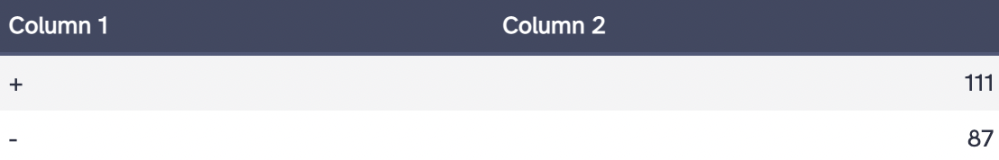
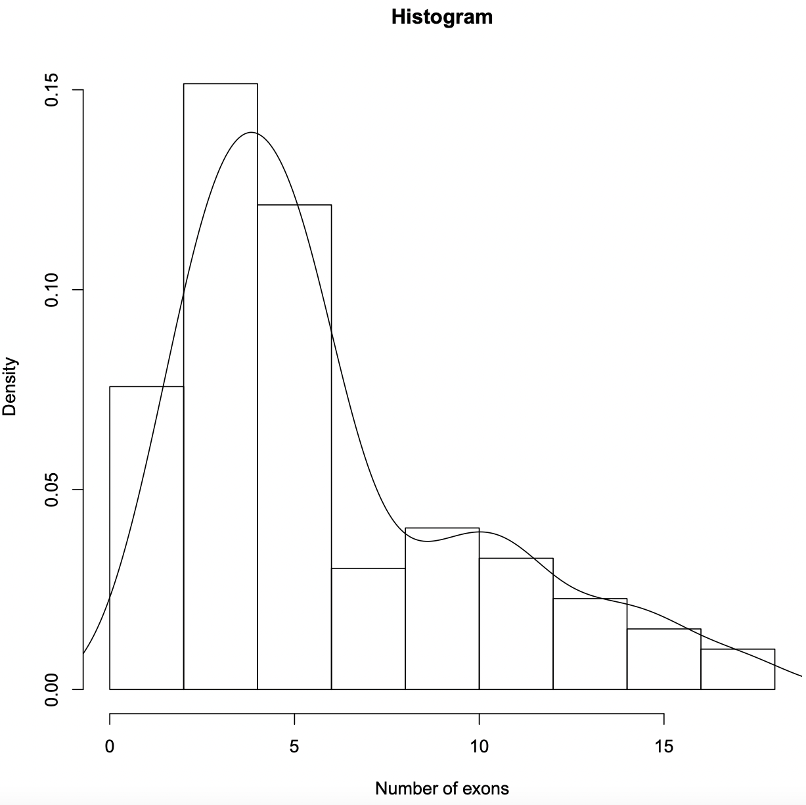
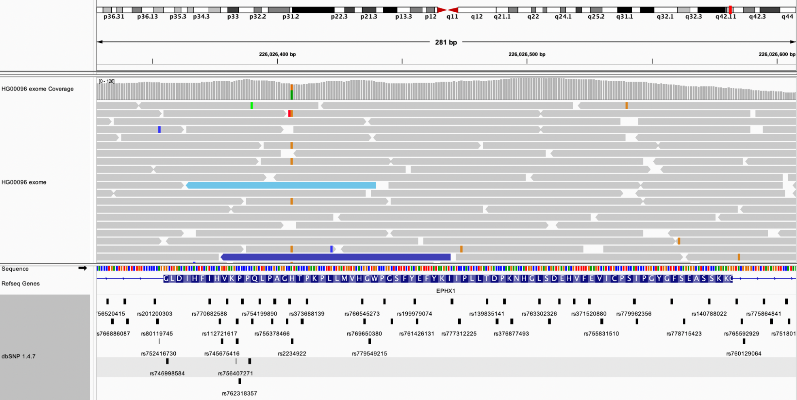
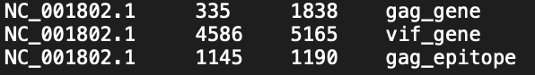

Genomic Databases and Tools
UCSC Genome Browser
UCSC is primarily a eukaryotic genome browser containing data from 97 eukaryotic genomes. The database includes assembly data, precomputed comparative genomic data, mRNA, EST, RefSeq gene alignments, and links to NCBI Map Viewer and Ensembl. The UCSC Table Browser allows for the download of data from UCSC in a tab-delimited format.
Example 1: The human TUBB3 gene was located in the UCSC Genome Browser (hg38), and the regulatory regions were analyzed based on the ENCODE regulation tracks.
NM_001197181.2 (tubulin beta 3 class III, transcript variant 2) - The double peaks seen in the layered H3K27Ac and H3K4Me3 tracks are consistent with the promoter region. Additionally, there appears to be a regulatory element, such as an enhancer, upstream of the promoter, as denoted by the broad peaks in the layered H3K4Me1 and H3K27Ac.
NM_006086.4 (tubulin beta 3 class III, transcript variant 1) - Enrichment in the layered H3K4Me3 track is associated with the promoter.
At the same locus as above, the Encode tracks were configured to only show data from the HUVEC cell line. HUVEC refers to human umbilical vein endothelial cells. The TUBB3 gene appears to be expressed in the HUVEC cell line. Similar to the answer above, the double peaks in H3K27Ac and H3K4Me3 are associated with the promoter region. Enrichment in H3K4Me3 is found near promoters.
Galaxy
Galaxy is an open-source framework that enables scientific workflows by using computational tools and information from databases.
Galaxy was used to query for hg38 genes in ENCODE region ENm008 (chr16:1-500000) from the UCSC Main Table Browser at UCSC. The data was exported in BED format. Using the Genes and Gene Predictions group and GENCODE V43 track, 198 genes were identified. The number of genes located on the plus and minus strands was determined using the Group tool and Count operation in Galaxy. There are 111 genes on the (+) strand and 87 genes on the (-) strand.
Below is a histogram generated in Galaxy demonstrating the number of exons in each gene
Integrative Genomics Viewer (IGV)
IGV is an interactive tool used for the visualization of genomic data. It is a collaboration between MIT and Harvard and is available through the Broad Institute.
Example 1: The fourth exon of the EPHX1 gene was analyzed in the HG00096 exome sequence. Using IGV for the hg19 genome, the datasets from dbSNP 1.4.7 and the HG00096 exome sequencing track from the 1000 Genomes project were loaded. There are 44 SNPs overlapping this exon, and this individual appears to be heterozygous at rs2234922 (A: 57 (63%), G:34 (37%))
Example 2: The HIV-1 genome was opened in IGV, and a zero-based BED file was created with the following intervals
- The gag gene located at positions 336 through 1838.
- The vif gene located at positions 4587 through 5165.
- A Gag protein potential epitope located at amino acid positions 271 through 285 of the Gag protein. The amino acid sequence is NKIVRMYSPTSILDI.
BED file created 
Display of all three intervals in IGV
Zoomed-in screenshot showing the epitope and the corresponding amino acid sequence